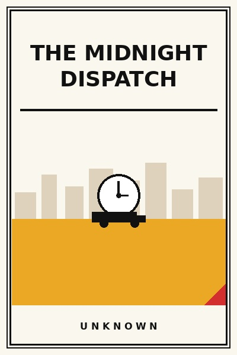

The Midnight Dispatch
What 3 AM logistics reveals about organizational character and fragility.
READ FULL BREAKDOWN (FREE) →The Big Idea
Operational resilience is proven between midnight and dawn, where supply chain fragility shows its true face.
Key Lessons
The Night Shift Truth
Corporate headquarters designs neat flowcharts, but night shift workers keep the wheels turning with duct tape and grit.
Handoff Vulnerabilities
Most catastrophic business failures occur during shift changes where critical status updates get dropped.
Designing for Low Cognitive Load
When people are tired at 4 AM, complex multi-step digital interfaces guarantee critical user mistakes.
The Cost of Hero Culture
Relying on a single dedicated dispatcher working twenty-hour shifts is not dedication; it is systemic negligence.
Physical Reality Over Dashboards
Software dashboards showing all green metrics mean nothing if trucks are stuck in mud outside the depot gate.
Dignity in the Dark
Providing hot chai, clean restrooms, and fair night allowances transforms worker loyalty in tough logistics.
The Sunrise Test
When morning comes, clean dispatch operations hand over tidy manifests without drama or finger-pointing.
The Graveyard Proves It
Where this advice breaks: Where this advice breaks: glorifying midnight emergency heroics can mask chronic management failure to plan during daytime hours.
Read the autopsy: webvan-warehouses →